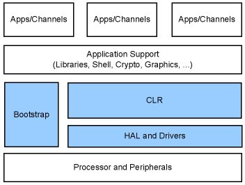
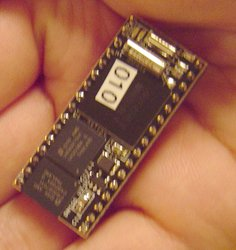
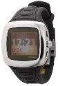
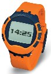

(Updated Dec. 24, 2004)
A SPOT of Background
Microsoft has described its Smart Personal Object Technology (SPOT) initiative as being "aimed at improving the function of everyday objects through the injection of software." Smart wristwatches are the first SPOT-based application, and Bill Gates unveiled early SPOT watch prototypes during his keynote address at the January, 2003 Consumer Electronics Show (CES) in Las Vegas.
SPOT watches offer advanced features such as automatic time adjustment based on location, customizable watch faces, and access to continually updated content such as news, traffic alerts, weather reports, stock quotes, and sports scores, instant messaging, etc. -- plus, of course, all the capabilities expected of a modern wristwatch such as chronometer, calendar, alarm, and timer functions.
At a sneak preview of the watches given by Microsoft at COMDEX 2003, Microsoft began referring to the SPOT watches as "Smart Watches with MSN Direct." The purpose of MSN Direct, a new Microsoft service to be offered through a monthly or annual subscription, is to use FM radio subcarriers to feed data to the watches, such as weather, traffic, and other information.
Bill Gates showed off the first consumer SPOT watches to achieve retail availability -- made by watchmakers Fossil and Suunto -- at the January, 2004 CES in Las Vegas. At the same time, Gates announced the launch of Microsoft's MSN Direct broadcasting service to transmit content to the watches.
What makes SPOT tick?
SPOT devices are built on a unique hardware/software platform developed by Microsoft Research (MSR) group for "DirectBand devices." A range of new technologies including a "low-distraction user interface, a new operating system platform, and new communications capabilities" have been developed in MSR's labs over the past several years, Microsoft said.
"Microsoft has invested heavily in this initiative to introduce software and hardware that will make everyday devices smarter and more useful for consumers," noted Bill Mitchell, general manager of Microsoft's SPOT Group.
SPOT chipset
In November 2002, Microsoft and National Semiconductor announced a SPOT chipset that resulted from a several-year collaboration between the two companies to define and develop embedded technology for DirectBand devices that would address the challenging power, cost, and physical size constraints of the initial SPOT watches. The two-chip set consists of "Stan," a radio chip that contains a tiny, sensitive 100MHz RF receiver, and "Ollie," a system-on-chip (SoC) processor based on a RISC CPU with on-chip SRAM and ROM, timers, interrupt controllers, and other core system functions.
The tiny (2.8 x 2.8 x .86 mm) radio chip draws just 90 milliwatts during operation, and a mere 30 microwatts in standby mode. Ollie, the SPOT SoC, contains a 32-bit ARM7 TDMI-S processor core which zooms along at 27.6 MHz, drawing roughly 50 mW (1.8 mW/MHz) at that blinding speed. The processor also contains 512KB of on-chip ROM and 384KB of on-chip SRAM memory.
SPOT's embedded software stack
Given Ollie's constrained hardware resources, it's not surprising that SPOT devices don't run Windows CE, which typically uses 10 to 20 times that much memory. Instead, SPOT runs an embedded software stack dubbed ".NET Embedded," which includes the three blocks shaded blue in the architecture diagram below: bootstrap code, to initialize the system on powerup; a Tiny HAL (hardware abstraction layer) plus device drivers, to control the underlying system hardware; and a Tiny CLR (common language routine), through which the device is programmed.

".NET Embedded" (shaded blue) includes Tiny CLR, Tiny HAL, drivers, bootloader
The Tiny CLR implements a subset of the .NET Common Language Runtime (CLR), enabling SPOT devices to run high-level code written using a subset of the .NET Framework, a Java-like runtime environment (the .NET Framework subset for Windows CE is known as .NET Compact Framework).
The Tiny CLR, which occupies under 132KB of memory, contains enough functionality to be suitable for embedded device applications and is programmable and debugable using Visual Studio.NET (C#), according to Donald Thompson, software architect and former development manager for SPOT.
"We support a subset of the .NET Framework," Thompson said. "We provide hundreds of different objects and thousands of functions. We support all of the things one would expect, like threads, strings, numeric types, datetime, fonts, bitmaps, etc. We have several domain-specific object libraries for the watch and .netcpu [CPU Module] (VTU, PWM, LCD, I/O, IRQs), among others."
.NET Embedded also provides a Tiny HAL that implements system-level functions, which interface with the system's underlying hardware, and a bootloader. The Tiny HAL takes up less than 40KB of memory.
"SPOT doesn't have an OS, just enough ASM/C/C++ to support the TinyCLR," Thompson said.
MSN Direct content delivery service
MSN Direct is described by Microsoft as "a specialized new wireless service that combines technology with fashion to deliver customized information to a new category of watches." The service enables users to "conveniently and discreetly receive the information that matters most to them, at a glance and for an affordable price," Microsoft said.
The MSN Direct broadcasting service transmits selected content directly to the devices through an FM subcarrier that transmits weather, traffic, and other information over low-power FM frequencies. Watch owners must subscribe to the transmission service on a monthly or annual basis. According to Microsoft, as of September 2004, the areas covered by MSN Direct's FM Subcarrier network include the top 100 U.S. and Canadian Metropolitan Transit Areas (MTAs).
Third-party SPOT development kit
Early in SPOT's lifecycle, Microsoft hinted at a board-level implementation of SPOT suitable for use by hobbyists, educators, and researchers. Such a product is now available from .netcpu Corp. The kit consists of a tiny computer module in the format of a 32-pin "DIP" (dual inline package) chip, allowing the module to conveniently plug into a standard 32-pin DIP socket. In addition to the Ollie SoC, the ".netcpu CPU Module" integrates 4MB of nonvolatile Flash memory, and a number of I/O ports.
The CPU module is sold in a kit that includes a Microsoft .NET Embedded SDK, a Microsoft Visual Studio 2005 Installer CD, and user documentation. An optional carrier board is also offered, to simplify projects based on the CPU module. The carrier board provides a 32-pin DIP socket for the CPU module, and routes signals from the CPU module's 32-pin interface to various dual-row connectors.
Read more about the CPU module and associated kits here.
See SPOT run!
A short promotional video introduction to Microsoft's SPOT watch technology and what the watches can do is available here (3.5 minute Windows Media file).
Further details regarding Microsoft SPOT watches and other SPOT details are available on Microsoft's SPOT page.
Quick Survey of SPOT Watches
 Fossil SPOT watches
Fossil was one of the first watch companies to introduce wristwatches based on Microsoft's SPOT watch technology, including the standard version shown on the left and several boutique models (below).
 Fossil designer models
Here we see two of Fossil's boutique SPOT watch models -- the "Dick Tracy" watch is shown on the left while the one on the right will be sold under Fossil's tech brand, Abacus (shown).
In October, 2004 Fossil introduced a new line of "Wrist Net Smart Watches," available in two different brands and three styles. The new SPOT watches boast thinner designs and butterfly clasps said to provide a more comfortable fit.
Further information on Fossil's SPOT watches is available from Fossil's website.
Suunto SPOT watches
Suunto, the Finnish sports instrument company, also weighed in early with plans for two SPOT watch models in its n-series line. Several models in Suunto's "n3" have now been introduced to the market, and a sporty new "n6" model is rumored to be in the works. In addition to the "standard" SPOT watch functions, Suunto has said that its SPOT watches may eventually include GPS data, heart rate monitoring, and other specialized features targeting athletes and mariners. A larger view of the Suunto n3i SPOT watch, pictured above, is available here. Further details on Suunto's SPOT watches are available here.
Swatch SPOT Watches
Swiss watchmaker Swatch recently introduced a line of SPOT watches called "Paparazzi". All four models share the same features and differ primarily in color scheme. Shown at left is the News.surfer SUHN100. The other models are shown below. Click each image for a larger view. For more information on Swatch Paparazzi watches, click here.
Tissot High-T smart watch
Another Swiss watchmaking icon, Tissot, has added a SPOT watch to its line of touchscreen Tactile watches. Four touch zones around the perimeter of the watch face and one in the center enable navigation through the watch's various menus and displays. Click here for a larger view of the Tissot High-T.
Related stories
 |
 Use of this site is governed by our
Terms of Use
and Privacy Policy.
Except where otherwise specified, the contents of this site are copyright © 1999-2005
Ziff Davis Publishing Holdings Inc.
All Rights Reserved. Reproduction in whole or in part without permission is prohibited. Windows is a trademark or registered trademark of Microsoft Corporation in the United States and/or other countries and is used by WindowsForDevices under license from owner. All other marks are the property of their respective owners. WindowsForDevices is an independent publication not affiliated with Microsoft Corporation.
Use of this site is governed by our
Terms of Use
and Privacy Policy.
Except where otherwise specified, the contents of this site are copyright © 1999-2005
Ziff Davis Publishing Holdings Inc.
All Rights Reserved. Reproduction in whole or in part without permission is prohibited. Windows is a trademark or registered trademark of Microsoft Corporation in the United States and/or other countries and is used by WindowsForDevices under license from owner. All other marks are the property of their respective owners. WindowsForDevices is an independent publication not affiliated with Microsoft Corporation. 2005
market survey
2005
market survey


 news feed
news feed